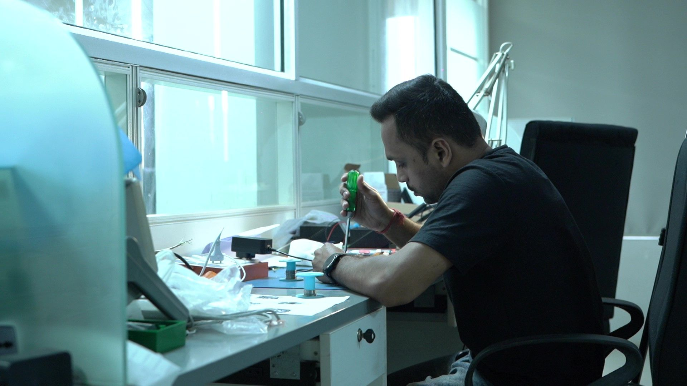

For a long time, testing in the Aadhaar ecosystem could only happen on live production
systems. Every integration, every update, and every new feature for every new device had to
be verified in real-time. As you can imagine, this process was very slow, complex, and
sometimes risky. Developers couldn’t take the kind of creative liberties that innovation
often demands.
Adding to this challenge was the lack of device interoperability. Earlier, every RD device
vendor maintained their own system and protocols, which meant developers had to buy,
configure, and integrate separate hardware for each brand. Certain datasets could only be
used on specific devices, making the entire testing process significantly more
time-consuming and expensive.
That’s where the Access Computech team stepped in.
Introducing the Universal RD
We developed the Universal Registered Device (URD), a system that allows any Aadhaar-enabled
product to work seamlessly, regardless of the device vendor. The URD is fully compatible
with the UIDAI Sandbox and can be used by anyone working within the Aadhaar ecosystem.
With the Universal RD:
- Vendors no longer need to purchase multiple devices for testing.
- Developers can integrate once and deploy across multiple RD platforms.
- The ecosystem moves closer to true interoperability and inclusivity.
This innovation simplified compliance, cut integration time, and helped level the playing
field for both established manufacturers and emerging technology providers.
Our Role in Making the Sandbox Work for Everyone
To make secure and universal testing possible, the ecosystem needed a safe environment, one
that could simulate Aadhaar authentication without using live data. UIDAI’s vision for the
Sandbox addressed this exact need. Instead of relying on real transactions, the Sandbox
simulates authentication using spoofed or masked credentials. This gives developers and
device vendors a secure space for deployment testing, ensuring systems work flawlessly
before going live.

As one of UIDAI’s early Sandbox Partners, Access played a pivotal role in operationalising
the environment.
Our contributions included:
- Running the Auth Client — the key interface between RD (Registered Device)
systems and UIDAI’s authentication servers.
- Providing sandbox-compatible RD services — which enabled developers and
device manufacturers to test Aadhaar authentication workflows safely.
- Collaborating with UIDAI’s Technology Centre — to resolve integration
challenges, making the Sandbox stable and usable for all ecosystem players.
This partnership not only helped UIDAI open the Sandbox for external testing but also made
it easier for innovators to join the Aadhaar ecosystem with greater confidence and speed.
Why It Matters
UIDAI’s Sandbox and Access’s Universal RD together mark a crucial step in strengthening
India’s digital infrastructure. They make it possible to:
- Test and certify devices faster, without relying on live Aadhaar data.
- Encourage participation from smaller and regional device vendors.
- Improve security, transparency, and interoperability across the ecosystem.
In essence, these advancements help ensure that Aadhaar-linked services can reach every
corner of India securely, reliably, and efficiently.
Looking Ahead
Access Computech’s work on the Sandbox is much more than a technical breakthrough. It
represents our ongoing commitment to supporting India’s digital identity mission by building
systems that make digital trust simpler, safer, and more universal.